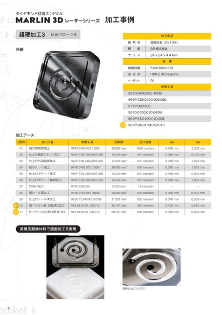
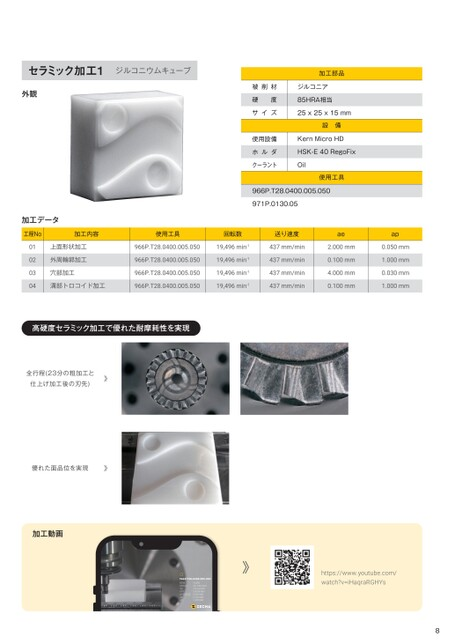
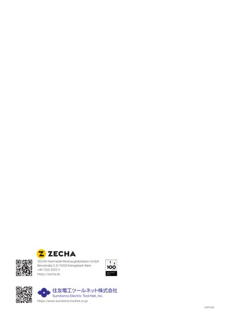

p.1 表紙

ダイヤモンド材種エンドミル
MARLIN3D
レーザーシリーズ
HARD.
MARLIN3D
このページの詳細 →
p.1 製品の特長

MARLIN3Dの特長
■独自のレーザー加工技術
精密で鋭利な刃先品位を形成
切削抵抗の大幅な低減と最適な温度制御を実現
工具の安定長寿命の実現と加工能率向上によるサイクルタイムの大幅短縮を実現
優れた表面品質と1μm以下のシャープなエッジ形成により、高い形状精度を実現
独自のレーザー加工技術
パルス時間
ナノ秒 0.000000001s ナノ秒
レーザ
フェムト秒 0.000000000000001s フェムト秒
ナノ秒レーザ フェムト秒レーザ ナノ秒レーザレーザ フェムト秒レーザ レーザ
独自のクーラントシステム
■切削温度の管理と高い切屑処理性能を実現
シャンク本体外周部から刃先にクーラントを的確に吐出させることで、高速回転で使用した際も
確実に切れ刃先端部の温度制御が可能
工具中央部からクーラントを吐出させることで、切屑を確実に切削領域の外に排出
工具底面のワイパーデザインは、工具中央部からのクーラント流を外側に加速させて、
切屑排出をさらに向上
ワイパーデザイン
絶対的な工具精度の提供
■全ての工具が高い精度基準を保証するために、工具輪郭の
測定プロトコルを提供します
測定プロトコルにより工具形状のより精密な分析が可能、より高い加工精度が得られます
包括的な測定プロトコルにより、MARLIN3Dレーザーシリーズのすべての工具が
当社の厳しい品質条件を満たし、最高レベルの性能を発揮します
超硬合金やセラミック材の加工改善
■従来工法による、硬質で脆い材料の ■従来工法による、硬質で脆い材料の ■MARLIN3Dシリーズの使用による高能率加工方法■MARLIN3Dシリーズの使用による高能率加工方法
一般的な加工方法と課題 一般的な加工方法と課題 電極製造 電極加工 電極製造磨き仕上げ 電極加工
90分 130分 90分100分 130分
既存の加工技術では、 既存の加工技術では、 従来工法 従来工法
長い加工時間と高いコストを招きます
生産効率と品質を同時に向上させることは困難です 生産効率と品質を同時に向上させることは困難です MARLIN3D MARLIN3D
加工プロセスの最適化は困難です 加工プロセスの最適化は困難です 粗ミリング加工 11分 仕上げミリング加工 25分 粗ミリング加工 11分 仕上げミリング加工 25分
…段替え時間
推奨被削材質: 第一推奨 推奨被削材質 第二推奨 : 第一推奨 第二推奨 被削材質
アイコンの分類 工具の特長 アイコンの分類 : 工具材種 工具の特長 工具仕様 : 工具材種 アイコン 工具仕様 超硬合金 セラミック アイコン
仕上げ精度 : 仕上げ精度 : 超硬合金 セラミック
1
このページの詳細 →
p.2 製品ラインナップ

PCD製品ラインナップ
966P.Tシリーズ962P.Tシリーズ 966P.Tシリーズ 971Pシリーズ 962P.Bシリーズ 971Pシリーズ 962P.Bシリーズ
M
超硬合金 超硬合金 超硬合金超硬合金 超硬合金
セラミックセラミック セラミックセラミック セラミック セラミック
PCDPCD PCDPCD PCD
PCDラジアス(大径)PCDラジアス(小径) PCDドリルPCDラジアス(大径) PCDドリル
刃刃 数:14〜42 数:3〜9 刃刃 数:2数:14〜42 PCDボール 刃 数:2 PCDボール
刃刃 径:φ2.0〜6.0径:φ0.5〜2.0 刃刃 径:φ0.5〜2.0径:φ2.0〜6.0 刃 径:φ0.5〜2.0
電着ダイヤ(砥石)製品ラインナップ
9911シリーズ
内部給油機構を有した
電着ダイヤ(砥石)
PCDエンドミル同様にシャンククーラントシステムと
超硬合金 超硬合金 ピン先端からの先端クーラントシステムを有しており、 超硬合金 ピン先端からの先端クーラントシステムを有しており、
これにより工具寿命と高能率加工を両立します
セラミックセラミック ダイヤ粒子は円周方向にドレッシングされており、ダイヤ粒子は円周方向にドレッシングされており、 セラミック
電着電着 これにより仕上げ代を低く抑えることができますこれにより仕上げ代を低く抑えることができます 電着
刃 数:7
刃 刃 径:φ1.0〜6.0 径:φ1.0〜6.0 刃 径:φ1.0〜6.0
適応ガイド
適応加工内容適応被削材 工具材質適応加工内容 工具仕様工具材質 工具仕様
穴あけ 粗加工 シリーズ中仕上げ 超硬 仕上げ セラミック 乾式 湿式穴あけ粗加工 PCD 中仕上げ 電着 仕上げ 形状乾式 湿式 刃数 先端 PCD シャンク 電着 ワイパー 形状 測定 刃数 先端 シャンク ワイパー 測定
加工 加工 加工 加工 クーラント クーラント デザイン プロトコル クーラント クーラント デザイン プロトコル
962P.T○ ◎○ ◎ ○ ○ ○ ○ ラジアス 3-9 ○ ○ ○ △ ラジアス ○ 3-9 ○ △ ○
966P.T○ ◎○ ◎ ○ ○ ○ ○ ラジアス14-42 ○ △○ ○ ○ ラジアス ○ 14-42 △ ○ ○ ○
○ 971P ◎ ○◎ ○○ ○ ドリル ○ ○2 ○ ○ ドリル ○ ○ ○
○ 9910 ◎ ◎ ○ ○ ○ ダイヤ 電着 ○ ○ ダイヤ 電着 ○ ○
○ 9911 ◎ ◎ ○ ○ ○ ダイヤ 電着 ○7 ○ ○ ダイヤ 電着 ○ ○ ○
◎:適応被削材 ○:適応加工と工具仕様
△:適応アイテムが限られていますので、製品情報で確認願います。
工具仕様工具材種 工具仕様 仕上げ精度 仕上げ精度
PCD 電着
2枚刃 ダイヤモンド 焼結体 3枚刃 ダイヤモンド 電着 多刃 クーラント シャンク 2枚刃 シャンククーラント &先端クーラント 3枚刃 &ワイパーデザイン シャンククーラント 多刃 シャンククーラント &先端クーラント クーラント シャンク シャンククーラント &先端クーラント 粗仕上げ 品位 &ワイパーデザイン シャンククーラント 中仕上げ 品位 シャンククーラント &先端クーラント 仕上げ 品位 粗仕上げ 品位 中仕上げ 品位 仕上げ 品位
&ワイパーデザイン &ワイパーデザイン 2 2
このページの詳細 →
p.3 製品情報

ダイヤモンド材種エンドミル
MARLIN3DレーザーシリーズMARLIN3Dレーザーシリーズ 製品情報 製品情報
MARLIN962P.Tシリーズ
仕様:コーナR付きPCDエンドミル3〜9枚刃 仕様:コーナR付きPCDエンドミル3〜9枚刃 d2 d2
シャンククーラント/シャンククーラント&ワイパーデザイン*シャンククーラント/シャンククーラント&ワイパーデザイン* d1 d1 dh5
用途:超硬・セラミックの湿式中仕上げ加工用/仕上げ加工用
* * 962p.t5.0100.010.008
超硬合金セラミックPCD
型番 d1 型番 d2 d1 l1 d2 l2 d l1 l2 d
962P.T3.0050.005.007 0.5 962P.T3.0050.005.007 0.5 0.05 0.5 0.7 0.5 0.7 0.054.0 0.743 0.7 4.0
962P.T5.0100.010.008 1.0 962P.T5.0100.010.008 1.0 0.10 1.0 0.8 1.0 0.8 0.104.0 0.843 0.8 4.0
* 962P.T9.0200.010.017 2.0* 962P.T9.0200.010.017 2.0 0.10 2.0 1.7 2.0 1.7 0.10 6.0 1.7 49 1.7 6.0
MARLIN966P.Tシリーズ
仕様:コーナR付きPCDエンドミル14〜42枚刃 仕様:コーナR付きPCDエンドミル14〜42枚刃 d2 d2
シャンククーラント&ワイパーデザイン*
シャンククーラント&先端クーラント&ワイパーデザイン シャンククーラント&先端クーラント&ワイパーデザイン d1 d1 dh5
用途:超硬・セラミックの湿式中仕上げ加工用/仕上げ加工用
966P.t42.0600.005.050
*
超硬合金セラミックPCD
型番 d1 型番 d2 d1 l1 d2 l2 d l1 l2 d
* 966P.T14.0200.005.020 2.0 * 966P.T14.0200.005.0200.05 1.9 2.0 1.0 1.9 2.0 0.056.0 1.050 2.014 6.0
966P.T21.0300.005.030 3.0 966P.T21.0300.005.0300.05 2.9 3.0 1.0 2.9 3.0 0.05 6.0 1.0 50 3.0 21 6.0
966P.T28.0400.005.050 4.0 966P.T28.0400.005.0500.05 3.9 4.0 1.0 3.9 5.0 0.056.0 1.050 5.028 6.0
966P.T35.0500.005.050 5.0 966P.T35.0500.005.0500.05 4.9 5.0 1.0 4.9 5.0 0.056.0 1.050 5.035 6.0
966P.T42.0600.005.050 6.0 966P.T42.0600.005.050 5.7 0.05 6.0 1.0 5.7 5.0 0.05 6.0 1.0 50 5.0 42 6.0
MARLIN971Pシリーズ
仕様:PCDツイストドリル2枚刃シャンククーラント
用途:超硬・セラミックの湿式または乾式穴あけ加工用 用途:超硬・セラミックの湿式または乾式穴あけ加工用 140°d1 140°d1 dh5
971P.0110.05
超硬合金セラミックPCD
型番 d1 型番 l1 l2 d
971P.0050.04 0.50 971P.0050.042.0 2.5 4.0 43 43
971P.0060.04 0.60 971P.0060.042.4 2.5 4.0 43 43
971P.0070.04 0.70 971P.0070.04 2.8 2.9 4.0 43 43
971P.0080.04 0.80 971P.0080.043.2 3.3 4.0 45 45
971P.0090.04 0.90 971P.0090.043.6 3.7 4.0 45 45
971P.0100.04 1.00 971P.0100.044.0 4.1 4.0 45 45
971P.0110.05 1.10 971P.0110.05 5.5 5.6 4.0 47 47
971P.0120.05 1.20 971P.0120.056.0 6.1 4.0 47 47
971P.0130.05 1.30 971P.0130.056.5 6.6 4.0 47 47
971P.0140.05 1.40 971P.0140.057.0 7.1 4.0 47 47
971P.0150.05 1.50 971P.0150.057.5 7.6 4.0 47 47
971P.0160.05 1.60 971P.0160.05 8.0 8.1 4.0 50 50
971P.0170.05 1.70 971P.0170.058.5 8.6 4.0 50 50
971P.0180.05 1.80 971P.0180.059.0 9.1 4.0 50 50
971P.0190.05 1.90 971P.0190.059.5 9.6 4.0 50 50
971P.0200.05 2.00 971P.0200.05 10.0 10.1 4.0 50 50
推奨被削材質: 第一推奨 推奨被削材質 第二推奨 : 第一推奨 第二推奨 被削材質
アイコンの分類 工具の特長 アイコンの分類 : 工具材種 工具の特長 工具仕様 : 工具材種 アイコン 工具仕様 超硬合金 セラミック アイコン
仕上げ精度 : 仕上げ精度 : 超硬合金 セラミック
3
このページの詳細 →
p.4 製品情報（続き）

MARLIN9910シリーズ
仕様:ダイヤコート研削ピン d2 d2
用途:超硬の湿式粗加工用 0/±0,02 d1 0/±0,02 d1 d6h5 d6h5
9910.0300.100.120.M
超硬合金 セラミック 電着
d1 型番 d2 d1 l1 d2 l2 d l1 l2 d
1.0 9910.0100.010.040M 0.70 0.10 1.0 2.0 0.70 4.0 0.10 6.0 2.0 62 4.0 6.0 62
1.5 9910.0150.015.060M 1.25 0.15 1.5 3.0 1.25 6.0 0.15 6.0 3.0 62 6.0 6.0 62
2.0 9910.0200.020.080M 1.70 0.20 2.0 3.0 1.70 8.0 0.20 6.0 3.0 62 8.0 6.0 62
2.5 9910.0250.050.080M 2.15 0.50 2.5 4.0 2.15 8.0 0.50 6.0 4.0 62 8.0 6.0 62
3.0 9910.0300.020.120M 2.70 0.20 3.0 4.5 2.70 12.0 0.20 6.0 4.5 62 12.0 6.0 62
3.0 9910.0300.100.120M 2.60 1.00 3.0 4.5 2.60 12.0 1.00 6.0 4.5 62 12.0 6.0 62
4.0 9910.0400.050.160M 3.60 0.50 4.0 6.0 3.60 16.0 0.50 6.0 6.0 62 16.0 6.0 62
4.0 9910.0400.150.160G 3.50 1.50 4.0 6.0 3.50 16.0 1.50 6.0 6.0 62 16.0 6.0 62
5.0 9910.0500.050.200M 4.60 0.50 5.0 7.5 4.60 20.0 0.50 6.0 7.5 62 20.0 6.0 62
6.0 9910.0600.050.240M 5.60 0.50 6.0 9.0 5.60 24.0 0.50 6.0 9.0 62 24.0 6.0 62
6.0 9910.0600.200.240G 5.50 2.00 6.0 9.0 5.50 24.0 2.00 6.0 9.0 62 24.0 6.0 62
MARLIN9911シリーズ
仕様:ダイヤコート研削ピン d2 d2
シャンククーラント&先端クーラント シャンククーラント&先端クーラント d1 d1 dh5 dh5
用途:超硬の湿式粗加工用 0/-0,02 0/-0,02
9911.060.200.240G
r±0,01
超硬合金 セラミック 電着
d1 型番 d2 d1 l1 d2 l2 d l1 l2 d
1.0 9911.0100.010.040F 0.70 0.1 1.0 2.0 0.70 4.0 0.1 6.0 2.0 60 4.0 6.0 60
2.0 9911.0200.020.080M 1.70 0.2 2.0 3.0 1.70 8.0 0.2 6.0 3.0 60 8.0 6.0 60
3.0 9911.0300.020.120M 2.70 0.2 3.0 4.5 2.70 12.0 0.2 6.0 4.5 60 12.0 6.0 60
4.0 9911.0400.020.160M 3.60 0.2 4.0 6.0 3.60 16.0 0.2 6.0 6.0 60 16.0 6.0 60
4.0 9911.0400.050.160M 3.60 0.5 4.0 6.0 3.60 16.0 0.5 6.0 6.0 60 16.0 6.0 60
4.0 9911.0400.150.160G 3.50 1.5 4.0 6.0 3.50 16.0 1.5 6.0 6.0 60 16.0 6.0 60
6.0 9911.0600.020.240M 5.60 0.2 6.0 9.0 5.60 24.0 0.2 8.0 9.0 60 24.0 8.0 60
6.0 9911.0600.050.240M 5.60 0.5 6.0 9.0 5.60 24.0 0.5 8.0 9.0 60 24.0 8.0 60
6.0 9911.0600.200.240G 5.50 2.0 6.0 9.0 5.50 24.0 2.0 8.0 9.0 60 24.0 8.0 60
シリーズ名 刃径 シリーズ名 首下長さ 刃径 特殊/特型品は別途 首下長さ 特殊/特型品は別途
〈例〉 966P.T14.0200.005.020 工具型番の構成 〈例〉 966P.T14.0200.005.020 住友電工ツールネットまで 住友電工ツールネットまで
ご相談ください
刃数 コーナR
工具仕様 工具材種 工具仕様 仕上げ精度 仕上げ精度
PCD 電着
2枚刃 ダイヤモンド 焼結体 3枚刃 ダイヤモンド 電着 多刃 クーラント シャンク 2枚刃 シャンククーラント &先端クーラント 3枚刃 &ワイパーデザイン シャンククーラント多刃 シャンククーラント &先端クーラント クーラント シャンク シャンククーラント &先端クーラント 粗仕上げ 品位 &ワイパーデザイン シャンククーラント 中仕上げ 品位 シャンククーラント &先端クーラント 仕上げ 品位 粗仕上げ 品位 中仕上げ 品位 仕上げ 品位
&ワイパーデザイン &ワイパーデザイン 4 4
このページの詳細 →
p.5 加工事例 超硬加工1

ダイヤモンド材種エンドミル
MARLIN3DレーザーシリーズMARLIN3Dレーザーシリーズ 加工事例 加工事例
超硬加工1
加工部品
外観 外観 被削材 超硬合金(Co10%)被削材 超硬合金(Co10%)
硬度 88HRA相当
サイズ 20x20x20.5mm
設備
使用設備 KernMicroHD
ホルダ HSK-E40RegoFix
クーラント Oil
使用工具
9911.0400.150.160G
9911.0400.020.160M
966P.T42.0600.005.050
966P.T28.0400.005.050
962P.B2.0100.050.013
加工データ
工程No 加工内容 工程No使用工具加工内容 回転数 使用工具送り速度 回転数 ae 送り速度 ap
01 粗くぼみ形状加工 9911.0400.150.160G 01 粗くぼみ形状加工40,000min-19911.0400.150.160G800mm/min 40,000min-1 4.000mm 800mm/min 0.030mm 4.000mm
02 粗側面加工 9911.0400.020.160M 02 粗側面加工 40,000min-19911.0400.020.160M1200mm/min 40,000min-1 0.015mm 1200mm/min 0.020mm 0.015mm
03 外周輪郭加工 9911.0400.020.160M 03 外周輪郭加工 40,000min-19911.0400.020.160M1200mm/min 40,000min-1 0.700mm 1200mm/min 0.030mm 0.700mm
04 仕上げ輪郭加工 966P.T42.0600.005.050 04 仕上げ輪郭加工 13,000min-1966P.T42.0600.005.050 600mm/min 13,000min-1 2.500mm 600mm/min 0.010mm 2.500mm
05 仕上げ上面加工 966P.T42.0600.005.050 05 仕上げ上面加工 13,000min-1966P.T42.0600.005.050 600mm/min 13,000min-1 0.200mm 600mm/min 0.005mm 0.200mm
06 仕上げ側面加工 966P.T28.0400.005.050 06 仕上げ側面加工 13,000min-1966P.T28.0400.005.050 600mm/min 13,000min-1 2.250mm 600mm/min 0.005mm 2.250mm
07 くぼみ形状加工 962P.B2.0100.050.013くぼみ形状加工 07 38,197min-1 962P.B2.0100.050.013 480mm/min 38,197min-1 0.100mm 480mm/min 0.050mm 0.100mm
08 くぼみ中仕上げ加工 962P.B2.0100.050.013くぼみ中仕上げ加工38,197min-1962P.B2.0100.050.013 08 480mm/min 38,197min-1 0.020mm 480mm/min 0.020mm 0.020mm
09 くぼみ仕上げ加工 962P.B2.0100.050.013くぼみ仕上げ加工38,197min-1 09 962P.B2.0100.050.013 480mm/min 38,197min-1 0.020mm 480mm/min 0.020mm 0.020mm
10 球面仕上げ加工 962P.B2.0100.050.013球面仕上げ加工 10 38,197min-1962P.B2.0100.050.013 480mm/min 38,197min-1 0.020mm 480mm/min 0.020mm 0.020mm
加工時間を大幅短縮、超硬合金の高能率加工を実現
MARLIN3Dによる
従来工法 加工時間 従来工法 加工時間 加工時間 高能率高品位加工 加工時間 高能率高品位加工
59分 59分 37分 37分
Ra:0.098μm Ra:0.098μm
Ra:0.080μm Ra:0.080μm Ra:0.010μm Ra:0.010μm
Ra:0.040μm Ra:0.040μm Ra:0.015μm Ra:0.015μm
Ra:0.110μm Ra:0.110μm Ra:0.025μm Ra:0.025μm
5
このページの詳細 →
p.6 加工事例 超硬加工2

超硬加工2
加工部品
外観 被削材 超硬合金(Co12%)被削材 超硬合金(Co12%)
硬度 88HRA相当
サイズ 25x15x25mm
設備
使用設備 iQ300
ホルダ HSK-E32
クーラント Oil
使用工具
9911.0200.020.080M
966P.T14.0200.005.020
966P.T42.0600.005.050
962P.B6.0100.050.013
9911.0600.200.240G
加工データ
工程No使用工具加工内容 回転数 使用工具送り速度 回転数 ae 送り速度 ap ae ap
9911.0200.020.080M 01 粗平面加工 40,000min-19911.0200.020.080M800mm/min 40,000min-1 0.600mm 800mm/min 0.040mm 0.600mm 0.040mm
9911.0200.020.080M 02 粗R形状加工 40,000min-19911.0200.020.080M800mm/min 40,000min-1 0.020mm 800mm/min 0.020mm 0.020mm 0.020mm
9911.0200.020.080M粗溝形状加工 03 40,000min-19911.0200.020.080M800mm/min 40,000min-1 2.000mm 800mm/min 0.020mm 2.000mm 0.020mm
962P.B6.0100.050.013仕上げ側面加工 04 40,000min-1 962P.B6.0100.050.013 1200mm/min 40,000min-1 0.030mm 1200mm/min 0.020mm 0.030mm 0.020mm
9911.0600.200.240G仕上げ溝形状加工 05 40,000min-19911.0600.200.240G500mm/min 40,000min-1 0.030mm 500mm/min 0.020mm 0.030mm 0.020mm
966P.T42.0600.005.050仕上げデッキ面加工 06 10,000min-1966P.T42.0600.005.050 800mm/min 10,000min-1 0.050mm 800mm/min 0.030mm 0.050mm 0.030mm
966P.T14.0200.005.020 07 仕上げ底面加工 30,000min-1966P.T14.0200.005.020 400mm/min 30,000min-1 0.030mm 400mm/min 0.020mm 0.030mm 0.020mm
測定結果面粗さデータ
Rz:0.141μm
Ra:0.010μm
Rz:0.151μm
Ra:0.012μm
Rz:0.095μm
Ra:0.010μm
6
このページの詳細 →
p.7 加工事例 超硬加工3

ダイヤモンド材種エンドミル
MARLIN3DレーザーシリーズMARLIN3Dレーザーシリーズ 加工事例 加工事例
超硬加工3超硬フローセル
加工部品
被削材 超硬合金(Co10%)
外観 外観 硬度 92HRA相当 硬度 92HRA相当
サイズ 24x24x4.4mm
設備
使用設備 KernMicroHD
ホルダ HSK-E40RegoFix
クーラント Oil
使用工具
9910.0400.050.160M
966P.T28.0400.005.050
971P.0200.05
9910.0100.010.040M
962P.T5.0100.010.008
962P.B6.0100.050.013
加工データ
工程No 加工内容 工程No使用工具加工内容 回転数 使用工具送り速度 回転数 ae 送り速度 ap
01 粗外周輪郭加工 9910.0400.050.160M 01 粗外周輪郭加工 38,000min-19910.0400.050.160M1000mm/min 38,000min-1 0.050mm 1000mm/min 5.500mm 0.050mm
02 仕上げ輪郭ステップ加工 966P.T28.0400.005.050仕上げ輪郭ステップ加工14,324min-1966P.T28.0400.005.050 02 401mm/min 14,324min-1 0.030mm 401mm/min 0.100mm 0.030mm
03 仕上げ外周輪郭加工 966P.T28.0400.005.050仕上げ外周輪郭加工 03 14,324min-1966P.T28.0400.005.050 401mm/min 14,324min-1 0.050mm 401mm/min 1.000mm 0.050mm
04 粗ポケット加工 9910.0400.050.160M粗ポケット加工 04 38,000min-19910.0400.050.160M600mm/min 38,000min-1 0.030mm 600mm/min 1.000mm 0.030mm
05 仕上げポケット加工 966P.T28.0400.005.050仕上げポケット加工 05 14,324min-1966P.T28.0400.005.050 401mm/min 14,324min-1 0.020mm 401mm/min 0.020mm 0.020mm
06 仕上げポケット輪郭加工 966P.T28.0400.005.050 06 仕上げポケット輪郭加工14,324min-1966P.T28.0400.005.050 401mm/min 14,324min-1 0.020mm 401mm/min 1.000mm 0.020mm
07 穴あけ加工 971P.0200.05穴あけ加工 07 5,000min-1971P.0200.0515mm/min 5,000min-1 ー 15mm/min
08 粗シール溝加工 9910.0100.010.040M粗シール溝加工 08 38,000min-19910.0100.010.040M600mm/min 38,000min-1 0.030mm 600mm/min 0.500mm 0.030mm
09 仕上げシール溝加工 962P.T5.0100.010.008仕上げシール溝加工31,831min-1962P.T5.0100.010.008382mm/min 09 31,831min-1 0.010mm 382mm/min 0.500mm 0.010mm
10 粗ヘリカル溝(流路溝)加工 962.B6.0100.050.013粗ヘリカル溝(流路溝)加工38,197min-1962.B6.0100.050.013480mm/min 10 38,197min-1 0.100mm 480mm/min 0.050mm 0.100mm
11 仕上げヘリカル溝(流路溝)加工 962.B6.0100.050.013仕上げヘリカル溝(流路溝)加工38,197min-1962.B6.0100.050.013480mm/min 11 38,197min-1 0.020mm 480mm/min 0.020mm 0.020mm
高硬度超硬材料で鏡面加工を実現
超硬合金(Co10%)
7
このページの詳細 →
p.8 加工事例 セラミック加工1

セラミック加工1ジルコニウムキューブ
加工部品
外観 被削材 ジルコニア 被削材 ジルコニア
硬度 85HRA相当
サイズ 25x25x15mm
設備
使用設備 KernMicroHD
ホルダ HSK-E40RegoFix
クーラント Oil
使用工具
966P.T28.0400.005.050
971P.0130.05
加工データ
工程No使用工具加工内容 回転数 使用工具送り速度 回転数 ae 送り速度 ap ae ap
966P.T28.0400.005.050 01 上面形状加工 19,496min-1966P.T28.0400.005.050 437mm/min 19,496min-1 2.000mm 437mm/min 0.050mm 2.000mm 0.050mm
966P.T28.0400.005.050 02 外周輪郭加工 19,496min-1966P.T28.0400.005.050 437mm/min 19,496min-1 0.100mm 437mm/min 1.000mm 0.100mm 1.000mm
966P.T28.0400.005.050 03 穴部加工 19,496min-1966P.T28.0400.005.050 437mm/min 19,496min-1 4.000mm 437mm/min 0.030mm 4.000mm 0.030mm
966P.T28.0400.005.050溝部トロコイド加工 04 19,496min-1966P.T28.0400.005.050 437mm/min 19,496min-1 0.100mm 437mm/min 1.000mm 0.100mm 1.000mm
高硬度セラミック加工で優れた耐摩耗性を実現
全行程(23分の粗加工と
仕上げ加工後の刃先)
優れた面品位を実現
加工動画
https://www.youtube.com/
watch?v=iHaqraRGHYs
8
このページの詳細 →
p.9 加工事例 セラミック加工2

ダイヤモンド材種エンドミル
MARLIN3DレーザーシリーズMARLIN3Dレーザーシリーズ 加工事例 加工事例
セラミック加工2セラミックフローセル
加工部品
被削材 ジルコニア
外観 外観 硬度 85HRA相当 硬度 85HRA相当
サイズ 24x24x4.4mm
設備
使用設備 KernMicroHD
ホルダ HSK-E40RegoFix
クーラント Oil
使用工具
9910.0400.050.160M
966P.T28.0400.005.050
971P.0200.05
962P.T5.0100.010.008
962.B6.0100.050.013
加工データ
工程No 加工内容 工程No使用工具加工内容 回転数 使用工具送り速度 回転数 ae 送り速度 ap
01 粗外周輪郭加工 9910.0400.050.160M 01 粗外周輪郭加工 38,000min-19910.0400.050.160M1000mm/min 38,000min-1 0.050mm 1000mm/min 5.500mm 0.050mm
02 仕上げ輪郭ステップ加工 966P.T28.0400.005.050仕上げ輪郭ステップ加工14,324min-1966P.T28.0400.005.050 02 401mm/min 14,324min-1 0.030mm 401mm/min 0.100mm 0.030mm
03 仕上げ外周輪郭加工 966P.T28.0400.005.050仕上げ外周輪郭加工 03 14,324min-1966P.T28.0400.005.050 401mm/min 14,324min-1 0.050mm 401mm/min 1.000mm 0.050mm
04 粗ポケット加工 966P.T28.0400.005.050 04 粗ポケット加工 14,324min-1966P.T28.0400.005.050 401mm/min 14,324min-1 0.050mm 401mm/min 1.000mm 0.050mm
05 仕上げポケット加工 966P.T28.0400.005.050仕上げポケット加工 05 14,324min-1966P.T28.0400.005.050 401mm/min 14,324min-1 0.020mm 401mm/min 0.020mm 0.020mm
06 仕上げポケット輪郭加工 966P.T28.0400.005.050 06 仕上げポケット輪郭加工14,324min-1966P.T28.0400.005.050 401mm/min 14,324min-1 0.020mm 401mm/min 1.000mm 0.020mm
07 穴あけ加工 971P.0200.05穴あけ加工 07 5,000min-1971P.0200.0515mm/min 5,000min-1 ー 15mm/min
08 粗シール溝加工 962P.T5.0100.010.008粗シール溝加工 08 31,831min-1962P.T5.0100.010.008255mm/min 31,831min-1 1.000mm 255mm/min 0.020mm 1.000mm
09 仕上げシール溝加工 962P.T5.0100.010.008仕上げシール溝加工31,831min-1962P.T5.0100.010.008450mm/min 09 31,831min-1 0.010mm 450mm/min 0.500mm 0.010mm
10 粗ヘリカル溝(流路溝)加工 962.B6.0100.050.013粗ヘリカル溝(流路溝)加工38,197min-1962.B6.0100.050.013480mm/min 10 38,197min-1 0.100mm 480mm/min 0.050mm 0.100mm
11 仕上げヘリカル溝(流路溝)加工 962.B6.0100.050.013仕上げヘリカル溝(流路溝)加工38,197min-1962.B6.0100.050.013480mm/min 11 38,197min-1 0.020mm 480mm/min 0.020mm 0.020mm
高硬度セラミック加工で優れた耐摩耗性を実現
使用前 使用前 使用後 使用後
966P.T28.0400.005.050
使用前 使用前 使用後 使用後
971P.0200.05
使用前 使用前 使用後 使用後
962P.T5.0100.010.008
9
このページの詳細 →
p.10 加工事例 セラミック加工3

加工内容
シール溝加工 流路溝加工シール溝加工貫通穴加工 流路溝加工 貫通穴加工
4.4mm
24mm
止まり穴加工 クロス穴加工
24mm
使用工具一覧
型番 工具刃数 刃径 コーナR 型番 刃長刃数 刃径 コーナR 刃長
9910.0400.050.160Mダイヤコート研削ピン ー 4.00mm9910.0400.050.160M 0.50mm 6.00mmー 4.00mm 0.50mm 6.00mm
966P.T28.0400.005.050PCDラジアス(大径) 28 4.00mm966P.T28.0400.005.050 0.05mm 1.00mm28 4.00mm 0.05mm CO 1.00mm
962P.B6.0100.050.013PCDボール 6 1.00mm962P.B6.0100.050.013 0.50mm 1.30mm6 1.00mm 0.50mm 1.30mm
962P.T5.0100.010.008PCDラジアス(小径) 5 1.00mm962P.T5.0100.010.008 0.10mm 0.80mm5 1.00mm 0.10mm 0.80mm
971P.0200.05PCDドリル 2 2.00mm 971P.0200.05 ー 10.00mm2 2.00mm 9910 966P ー962P.B 10.00mm 962P.T 9719910 966P 962P.B 962P.T 971
シリーズ シリーズ シリーズ シリーズ シリーズ
良好な刃先状態で優れた面品位を実現
加工面品位 エッジ品位 エッジ品位
Ra:0.0033μm シール溝エッジ シール溝エッジ
Ra:0.0017μm
Ra:0.0012μm 80μm 80μm
380X 970X
流路溝エッジ
総加工時間
93分
350X
加工動画
https://www.youtube.com/
watch?v=aCZhRWp1Psw
10
このページの詳細 →
p.11 加工事例 セラミック加工4

ダイヤモンド材種エンドミル
MARLIN3DレーザーシリーズMARLIN3Dレーザーシリーズ 加工事例 加工事例
セラミック加工3マイクロインプラント
加工部品
外観 外観 被削材 ジルコニア 被削材 ジルコニア
硬度 90HRA相当
サイズ D6x2mm
設備
使用設備 iQ500
ホルダ HSK-E40RegoFix
クーラント Oil
使用工具
9910.0400.050.160M
971P.0200.05
971P.0097(Specialtool)
966P.T21.0300.005.030
9910.0400.050.160M
9910.0200.020.080M
962P.T5.0150(Specialtool)
D1,4ChamferTool90°(Specialtool)
加工データ
工程No 加工内容 工程No 使用工具加工内容 回転数 使用工具送り速度 回転数 ae 送り速度 ap
01 粗上面形状加工 9910.0400.050.160M 01 粗上面形状加工 40,000min-19910.0400.050.160M800mm/min 0.030mm40,000min-1 〜3.000mm800mm/min 0.030mm
02 穴あけ(深さ2mm) 971P.0200.05穴あけ(深さ2mm) 02 4,800min-1971P.0200.055mm/min 4,800min-1 ー 2.500mm5mm/min
03 穴あけ(深さ0.97mm) 971P.0097(Specialtool)穴あけ(深さ0.97mm) 03 9,500min-1971P.0097(Specialtool) 8mm/min 9,500min-1 ー 2.200mm8mm/min
04 仕上げ面形状加工 966P.T21.0300.005.030仕上げ面形状加工 04 19,000min-1966P.T21.0300.005.030400mm/min 0.100mm19,000min-1 0.050mm 0.100mm
05 粗外周輪郭加工 9910.0400.050.160M粗外周輪郭加工 05 40,000min-19910.0400.050.160M800mm/min 0.030mm40,000min-1 2.700mm 0.030mm
06 粗面取り部加工 9910.0400.050.160M 06 粗面取り部加工 40,000min-19910.0400.050.160M800mm/min 0.030mm40,000min-1 2.700mm 0.030mm
07 仕上げ外周輪郭加工 966P.T21.0300.005.030仕上げ外周輪郭加工 07 19,000min-1966P.T21.0300.005.030400mm/min 0.010mm19,000min-1 0.700mm 0.010mm
08 粗トロコイド加工 9910.0200.020.080M粗トロコイド加工 08 43,000min-19910.0200.020.080M500mm/min 0.020mm43,000min-1 0.500mm 0.020mm
09 仕上げ内径側面ステップ面加工 962P.T5.0150(Specialtool)仕上げ内径側面ステップ面加工38,000min-1962P.T5.0150(Specialtool) 09 200mm/min 0.050mm38,000min-1 0.020mm 0.050mm
10 仕上げ内径ベース面ステップ加工 962P.T5.0150(Specialtool)仕上げ内径ベース面ステップ加工38,000min-1962P.T5.0150(Specialtool) 10 200mm/min 0.050mm38,000min-1 0.020mm 0.050mm
11 仕上げ面取りエッジ加工 D1,4ChamferTool90°(Specialtool) 11 仕上げ面取りエッジ加工15,000min-1D1,4ChamferTool90°(Specialtool) 200mm/min 0.050mm15,000min-1 0.050mm 0.050mm
加工動画
https://m.youtube.com/
watch?v=9tb94ipyE2Y&
feature=youtu.be
11
このページの詳細 →
p.12 加工事例（まとめ）

セラミック加工4ラウンドブランク
加工部品
外観 被削材 ジルコニア 被削材 ジルコニア
硬度 85HRA相当
サイズ Ø80x15mm
設備
使用設備 KernMicroHD
ホルダ HSK-E40RegoFix
クーラント Oil
使用工具
966P.T42.0600.005.050
971.0130.05
962P.T5.0100.010.008
9911.0600.200.240G
加工データ
工程No使用工具加工内容 回転数 使用工具送り速度 回転数 ae 送り速度 ap ae ap
966.T42.0600.005.050 01 上面形状加工 9,549min-1966.T42.0600.005.050 802mm/min 9,549min-1 1.200mm 802mm/min 0.020mm 1.200mm 0.020mm
966.T42.0600.005.050 02 外周輪郭加工 9,549min-1966.T42.0600.005.050 802mm/min 9,549min-1 0.015mm 802mm/min 0.020mm 0.015mm 0.020mm
971P.0130.05Zechaロゴ加工 03 5,056min-1971P.0130.0511mm/min 5,056min-1 ー 11mm/min 4.000mm ー 4.000mm
962P.T5.0100.010.008溝部トロコイド加工30,239min-1962P.T5.0100.010.008635mm/min 04 30,239min-1 0.030mm 635mm/min 0.020mm 0.030mm 0.020mm
9911.0600.200.240Gヘリカル加工(背面)40,000min-19911.0600.200.240G500mm/min 05 40,000min-1 5.400mm 500mm/min 0.025mm 5.400mm 0.025mm
内径輪郭加工(背面) 9911.0600.200.240G 06 内径輪郭加工(背面) 40,000min-19911.0600.200.240G800mm/min 40,000min-1 0.070mm 800mm/min 5.500mm 0.070mm 5.500mm
MEMO
12
このページの詳細 →
p.13 切削加工条件表

ダイヤモンド材種エンドミル
MARLIN3Dレーザーシリーズ MARLIN3Dレーザーシリーズ 切削加工条件 切削加工条件
MARLIN962P.Tシリーズ
底面加工
被削材質 超硬 被削材質 超硬 セラミック セラミック
アルミナ/ジルコニア 炭化ケイ素 アルミナ/ジルコニア
切削速度(m/min) 65-110 切削速度(m/min) 65-110 63-120 63-120 63-120
加工形式 仕上げ加工 加工形式 仕上げ加工 粗加工 仕上げ加工 粗加工 粗加工 仕上げ加工 仕上げ加工
型番 刃径コーナ 切れ刃 回転数 型番 ap 刃径コーナ ae 回転数 切れ刃 回転数 ap ap ae ae ap 回転数 ae ap ap ae ae ap ap ae ae
962P.T3.0050.005.0070.5000.0500.70041400 962P.T3.0050.005.007 248 0.010 0.5000.050 0.20040000 0.700 41400 360 248 0.030 0.010 0.300 0.20040000 0.010 0.300 360 0.030 0.0300.300 0.300 0.0100.300 0.010 0.300
962P.T5.0100.010.0081.0000.1000.80030000 962P.T5.0100.010.008 454 0.010 1.0000.100 0.30030000 0.800 30000 605 454 0.050 0.010 0.600 0.30030000 0.015 0.600 605 0.050 0.0500.600 0.600 0.0150.600 0.015 0.600
* 962P.T9.0200.010.0172.0000.1001.70017000 * 962P.T9.0200.010.017 630 0.010 2.0000.100 0.40019000 1.700 17000 860 0.050-0.070 630 0.010 1.200 0.40019000 0.020 1.2000.050-0.070 860 0.050-0.070 1.200 1.200 0.0201.200 0.020 1.2000.050-0.070
側面加工
被削材質 超硬 被削材質 超硬 セラミック セラミック
アルミナ/ジルコニア 炭化ケイ素 アルミナ/ジルコニア
切削速度(m/min) 65-110 切削速度(m/min) 65-110 63-120 63-120 63-120
加工形式 仕上げ加工 加工形式 仕上げ加工 粗加工 仕上げ加工 粗加工 粗加工 仕上げ加工 仕上げ加工
型番 刃径コーナ 切れ刃 回転数 型番 ap 刃径コーナ ae 回転数 切れ刃 回転数 ap ap ae ae ap 回転数 ae ap ap ae ae ap ap ae ae
962P.T3.0050.005.0070.5000.0500.70041400 962P.T3.0050.005.007 248 0.700 0.5000.050 0.01040000 0.700 41400 497 248 0.300 0.700 0.020 0.01040000 0.700 0.010 497 0.300 0.3000.020 0.020 0.7000.010 0.700 0.010
962P.T5.0100.010.0081.0000.1000.80030000 962P.T5.0100.010.008 454 0.800 1.0000.100 0.01530000 0.800 30000 900 454 0.800 0.800 0.025 0.01530000 0.800 0.015 900 0.800 0.8000.025 0.025 0.8000.015 0.800 0.015
* 962P.T9.0200.010.0172.0000.1001.70017000 * 962P.T9.0200.010.017 630 1.700 2.0000.100 0.02019000 1.700 17000 1030 630 1.700 1.700 0.035 0.020190001030 1.700 0.020 1.700 1.7000.035 0.035 1.7000.020 1.700 0.020
振れ精度:0.005μm以下 振れ精度:0.005μm以下 *
クーラント:不水溶性切削油を推奨 クーラント:不水溶性切削油を推奨 超硬合金 セラミック PCD 超硬合金 セラミック PCD
ヘリカル加工時の最大ランピング角:max10°
MARLIN966P.Tシリーズ
底面加工
被削材質 超硬 被削材質 超硬 セラミック セラミック
アルミナ/ジルコニア 炭化ケイ素 アルミナ/ジルコニア
切削速度(m/min) 170 切削速度(m/min) 170 190 190 190
加工形式 仕上げ加工 加工形式 仕上げ加工 粗加工 仕上げ加工 粗加工 粗加工 仕上げ加工 仕上げ加工
型番 刃径コーナ 切れ刃 回転数 型番 ap 刃径コーナ ae 回転数 切れ刃 回転数 ap ap ae ae ap 回転数 ae ap ap ae ae ap ap ae ae
* 966P.T14.0200.005.0202.0000.0502.00027000 * 966P.T14.0200.005.0202.000 3790.010-0.020 1.20030000 0.0502.000 27000 255 379 0.020 0.010-0.020 1.200 1.20030000 0.010 1.2000.020 255 0.020 1.200 1.200 0.0101.200 0.010 1.200
966P.T21.0300.005.0303.0000.0503.00018000 966P.T21.0300.005.0303.000 3790.010-0.0201.80020000 0.0503.000 18000 340 379 0.020 0.010-0.020 1.800 1.80020000 0.010 1.8000.020 340 0.020 1.800 1.800 0.0101.800 0.010 1.800
966P.T28.0400.005.0504.0000.0505.00013500 966P.T28.0400.005.0504.000 3790.010-0.0202.40015000 0.0505.000 13500 424 379 0.030 0.010-0.020 2.400 2.40015000 0.020 2.4000.030 424 0.030 2.400 2.400 0.0202.400 0.020 2.400
966P.T35.0500.005.0505.0000.0505.00011000 966P.T35.0500.005.0505.000 3790.010-0.0203.00013000 0.0505.000 11000 508 379 0.030 0.010-0.020 3.000 3.00013000 0.020 3.0000.030 508 0.030 3.000 3.000 0.0203.000 0.020 3.000
966P.T42.0600.005.0506.0000.0505.0009000 966P.T42.0600.005.0506.000 3790.010-0.0203.60010000 0.0505.000 9000 635 379 0.030 0.010-0.020 3.600 3.60010000 0.020 3.6000.030 635 0.030 3.600 3.600 0.0203.600 0.020 3.600
側面加工
被削材質 超硬 被削材質 超硬 セラミック セラミック
アルミナ/ジルコニア 炭化ケイ素 アルミナ/ジルコニア
切削速度(m/min) 170 切削速度(m/min) 170 190 190 190
加工形式 仕上げ加工 加工形式 仕上げ加工 粗加工 仕上げ加工 粗加工 粗加工 仕上げ加工 仕上げ加工
型番 刃径コーナ 切れ刃 回転数 型番 ap 刃径コーナ ae 回転数 切れ刃 回転数 ap ap ae ae ap 回転数 ae ap ap ae ae ap ap ae ae
* 966P.T14.0200.005.0202.0000.0502.00027000 * 966P.T14.0200.005.020 379 1.000 2.000 0.01030000 0.0502.000 27000 255 379 1.000 1.000 0.050 0.01030000 1.000 0.0101.000 255 1.000 0.050 0.050 1.0000.010 1.000 0.010
966P.T21.0300.005.0303.0000.0503.00018000 966P.T21.0300.005.030 379 1.000 3.000 0.01020000 0.0503.000 18000 340 379 1.000 1.000 0.075 0.01020000 1.000 0.0101.000 340 1.000 0.075 0.075 1.0000.010 1.000 0.010
966P.T28.0400.005.0504.0000.0505.00013500 966P.T28.0400.005.050 379 1.000 4.000 0.02015000 0.0505.000 13500 424 379 1.000 1.000 0.100 0.02015000 1.000 0.0201.000 424 1.000 0.100 0.100 1.0000.020 1.000 0.020
966P.T35.0500.005.0505.0000.0505.00011000 966P.T35.0500.005.0501.000 379 5.000 0.02013000 0.0505.000 11000 508 379 1.000 1.000 0.100 0.02013000 1.000 0.0201.000 508 1.000 0.100 0.100 1.0000.020 1.000 0.020
966P.T42.0600.005.0506.0000.0505.0009000 966P.T42.0600.005.050 379 1.000 6.000 0.02010000 0.0505.000 9000 635 379 1.000 1.000 0.100 0.02010000 1.000 0.0201.000 635 1.000 0.100 0.100 1.0000.020 1.000 0.020
振れ精度:0.005μm以下 振れ精度:0.005μm以下 *
クーラント:不水溶性切削油を推奨 クーラント:不水溶性切削油を推奨 超硬合金 セラミック PCD 超硬合金 セラミック PCD
ヘリカル加工時の最大ランピング角:max10°
推奨被削材質 : 第一推奨 推奨被削材質 第二推奨 : 第一推奨 第二推奨 被削材質
アイコンの分類 工具の特長 アイコンの分類 : 工具材種 工具の特長 工具仕様 : 工具材種 アイコン 工具仕様 超硬合金 セラミック アイコン
仕上げ精度 : 仕上げ精度 : 超硬合金 セラミック
13
このページの詳細 →
p.14 切削加工条件表（続き）

MARLIN971Pシリーズ
穴あけ加工
超硬 被削材質 セラミック 超硬 セラミック
アルミナ/ジルコニア
18 切削速度(m/min) 18 25 25
回転数 型番 ステップ 刃径 回転数 回転数 ステップ ステップ 回転数 ステップ
12000 6 971P.0050.04 2 0.5 12000 16000 6 8 2 16000 8
9500 6 971P.0060.04 2 0.6 13000 6 8 2 13000 8
8200 6 971P.0070.04 2 0.7 12000 6 8 2 12000 8
7200 6 971P.0080.04 0.8 10000 6 8 10000 8
6400 6 971P.0090.04 0.9 6400 8900 6 8 8900 8
5800 6 971P.0100.04 1 5800 8000 6 8 8000 8
5200 6 971P.0110.05 1.1 5200 7200 6 8 7200 8
4800 6 971P.0120.05 1.2 4800 6600 6 8 6600 8
4400 6 971P.0130.05 1.3 4400 6100 6 8 6100 8
4100 6 971P.0140.05 1.4 4100 5700 6 8 5700 8
3800 6 971P.0150.05 1.5 3800 5300 6 8 5300 8
3600 6 971P.0160.05 1.6 3600 5000 6 8 5000 8
3400 6 971P.0170.05 1.7 3400 4700 6 8 4700 超硬合金 8 セラミック PcD 超硬合金 セラミック PcD
3200 6 971P.0180.05 1.8 3200 4400 6 8 4400 8
3000 6 971P.0190.05 1.9 3000 4200 6 8 4200 振れ精度:0.003μm以下 8 振れ精度:0.003μm以下
2800 6 971P.0200.05 2 2800 4000 6 8 4000 クーラント:不水溶性切削油を推奨 8 クーラント:不水溶性切削油を推奨
MARLIN9910シリーズ
側面加工
超硬 被削材質 セラミック 超硬 セラミック
アルミナ/ジルコニア 炭化ケイ素
125-750 切削速度(m/min) 125-750 125-750 125-750 125-750 125-750
粗加工 加工形式 粗加工 粗加工 粗加工 粗加工 粗加工
回転数 型番 ap 刃径 ae コーナ切れ刃 回転数 回転数 apF ae ap ap ae 回転数 ae ap ae ap ae
40000 250 9910.0100.010.040M 2.0000.010-0.020 1.000 0.1004.000 40000 250 2.000 2500.010-0.020 2.000 0.010-0.020 2.000 0.010-0.02040000 250 2.0000.010-0.0202.0000.010-0.020
40000 300 9910.0150.015.060M 3.0000.010-0.02040000 1.5000.1506.000 300 3.0003000.010-0.020 3.0003.0000.010-0.0200.010-0.02040000 300 超硬合金 3.0000.010-0.0203.0000.010-0.020 電着 超硬合金 電着
40000 3509910.0200.020.080M 3.0000.010-0.02040000 2.0000.2008.000 350 3.0003500.010-0.020 3.0003.0000.010-0.0200.010-0.02040000 350 3.0000.010-0.0203.0000.010-0.020 セラミック セラミック
40000 4009910.0250.050.080M 4.0000.010-0.02040000 2.5000.5008.000 400 4.0004000.010-0.020 4.0004.0000.010-0.0200.010-0.02040000 400 ヘリカル加工時の最大ランピング角 4.0000.010-0.0204.0000.010-0.020 ヘリカル加工時の最大ランピング角
40000 4509910.0300.020.120M 4.5000.010-0.02040000 3.0000.20012.000 450 4.5004500.010-0.020 4.5004.5000.010-0.0200.010-0.02040000 450 :max10° 4.5000.010-0.0204.5000.010-0.020 :max10°
40000 450 9910.0300.100.120M 4.5000.010-0.02040000 3.0001.00012.000 450 4.5004500.010-0.020 4.5004.5000.010-0.0200.010-0.02040000 450 オフセットφ1.0まで:0.010mm 4.5000.010-0.0204.5000.010-0.020 オフセットφ1.0まで:0.010mm
40000 5509910.0400.050.160M 4.500 0.0204.000 0.50016.000 40000 550 4.500550 0.02 4.500 4.500 0.020 0.020 40000 550 オフセットφ1.0〜φ6.0 4.500 0.02 4.500 0.020 オフセットφ1.0〜φ6.0
40000 700 9910.0400.150.160G 6.0000.020-0.03040000 4.0001.50016.000 700 6.0007000.020-0.030 6.0006.0000.020-0.0300.020-0.03040000 700 :0.015mm〜0.020mm 6.0000.020-0.0306.0000.020-0.030 :0.015mm〜0.020mm
40000 6509910.0500.050.200M 6.0000.020-0.03040000 5.0000.50020.000 650 6.0006500.020-0.030 6.0006.0000.020-0.0300.020-0.03040000 650 回転数:最小32,000min-1 6.0000.020-0.0306.0000.020-0.030 回転数:最小32,000min-1
40000 7509910.0600.050.240M 7.5000.020-0.04040000 6.0000.50024.000 750 7.5007500.020-0.040 7.5007.5000.020-0.0400.020-0.04040000 750 (推奨40,000min-1) 7.5000.020-0.040 7.500 0.020-0.040 (推奨40,000min-1)
40000 8009910.0600.200.240G 9.0000.030-0.06040000 6.0002.00024.000 800 9.0008000.030-0.060 9.0009.0000.030-0.0600.030-0.06040000 800 クーラント:不水溶性切削油を推奨 9.0000.030-0.060 9.000 0.030-0.060 クーラント:不水溶性切削油を推奨
MARLIN9911シリーズ
側面加工
超硬 被削材質 セラミック 超硬 セラミック
アルミナ/ジルコニア 炭化ケイ素
125-750 切削速度(m/min) 125-750 125-750 125-750 125-750 125-750
粗加工 加工形式 粗加工 粗加工 粗加工 粗加工 粗加工
回転数 型番 ap 刃径 ae コーナ切れ刃 回転数 回転数 apF ae ap ap ae 回転数 ae ap ae ap ae
40000 250 9911.0100.010.040F 2.0000.010-0.020 1.000 0.1004.000 40000 250 2.000 2500.010-0.020 2.000 0.010-0.020 2.000 0.010-0.02040000 250 超硬合金 2.0000.010-0.0202.0000.010-0.020 セラミック 電着 超硬合金 セラミック 電着
40000 3009911.0150.020.060M 3.0000.010-0.02040000 1.5000.2006.000 300 3.0003000.010-0.020 3.0003.0000.010-0.0200.010-0.02040000 300 3.0000.010-0.0203.0000.010-0.020
40000 3509911.0200.020.080M 3.0000.010-0.02040000 2.0000.2008.000 350 3.0003500.010-0.020 3.0003.0000.010-0.0200.010-0.02040000 350 ヘリカル加工時の最大ランピング角 3.0000.010-0.0203.0000.010-0.020 ヘリカル加工時の最大ランピング角
40000 450 9911.0300.020.120M 4.5000.010-0.02040000 3.0000.20012.000 450 4.5004500.010-0.020 4.5004.5000.010-0.0200.010-0.02040000 450 :max10° 4.5000.010-0.0204.5000.010-0.020 :max10°
40000 550 9911.0400.020.160M 4.500 0.024.000 0.20016.000 40000 550 4.500550 0.02 4.500 4.5000.02 0.0240000 550 オフセットφ1.0まで:0.010mm 4.500 0.02 4.500 0.02 オフセットφ1.0まで:0.010mm
40000 5509911.0400.050.160M 4.500 0.024.000 0.50016.000 40000 550 4.500550 0.02 4.500 4.5000.02 0.0240000 550 オフセットφ1.0〜φ6.0 4.500 0.02 4.500 0.02 オフセットφ1.0〜φ6.0
40000 7009911.0400.150.160G 6.0000.020-0.03040000 4.0001.50016.000 700 6.0007000.020-0.030 6.0006.0000.020-0.0300.020-0.03040000 700 :0.015mm〜0.020mm 6.0000.020-0.0306.0000.020-0.030 :0.015mm〜0.020mm
40000 7509911.0600.020.240M 7.5000.020-0.04040000 6.0000.20024.000 750 7.5007500.020-0.040 7.5007.5000.020-0.0400.020-0.04040000 750 回転数:最小32,000min-1 7.5000.020-0.0407.5000.020-0.040 回転数:最小32,000min-1
40000 7509911.0600.050.240M 7.5000.020-0.04040000 6.0000.50024.000 750 7.5007500.020-0.040 7.5007.5000.020-0.0400.020-0.04040000 750 (推奨40,000min-1) 7.5000.020-0.040 7.500 0.020-0.040 (推奨40,000min-1)
40000 8009911.0600.200.240G 9.0000.030-0.06040000 6.0002.00024.000 800 9.0008000.030-0.060 9.0009.0000.030-0.0600.030-0.06040000 800 クーラント:不水溶性切削油を推奨 9.0000.030-0.060 9.000 0.030-0.060 クーラント:不水溶性切削油を推奨
工具仕様 工具材種 工具仕様 仕上げ精度 仕上げ精度
PCD 電着
2枚刃 ダイヤモンド 焼結体 3枚刃 ダイヤモンド 電着 多刃 クーラント シャンク 2枚刃 シャンククーラント &先端クーラント 3枚刃 &ワイパーデザイン シャンククーラント多刃 シャンククーラント &先端クーラント クーラント シャンク シャンククーラント &先端クーラント 粗仕上げ 品位 &ワイパーデザイン シャンククーラント 中仕上げ 品位 シャンククーラント &先端クーラント 仕上げ 品位 粗仕上げ 品位 中仕上げ 品位 仕上げ 品位
&ワイパーデザイン &ワイパーデザイン 14 14
このページの詳細 →
p.15 裏表紙・メーカー情報

ZECHAHartmetall-WerkzeugfabrikationGmbH
Benzstraße2,D-75203Königsbach-Stein
+49723230220
https://zecha.de
https://www.sumitomo-toolnet.co.jp
(2025.06)
このページの詳細 →